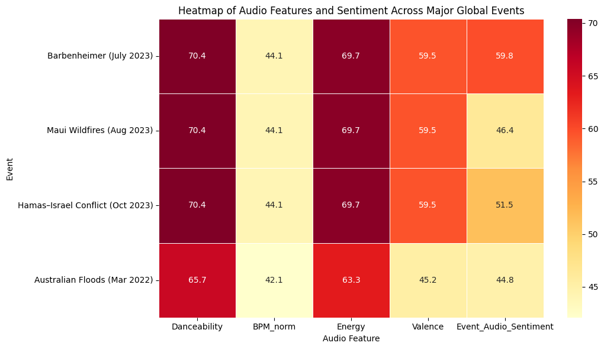
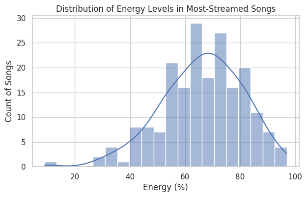
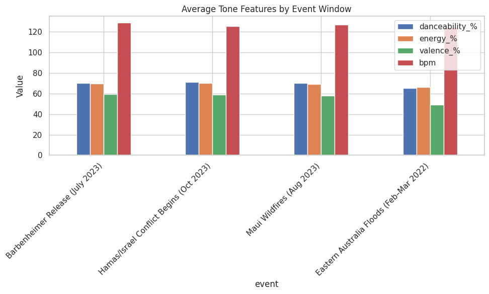

Project Overview
This project examines the relationship between major global events and the types of songs people stream on Spotify, utilizing computational tools to understand how cultural moments influence collective listening habits. Building on the text-analysis workflow we developed earlier in the semester, this project combines quantitative coding methods with humanistic interpretation to examine whether listeners tend to gravitate toward specific musical qualities, such as energy, mood, and language, during times of celebration, crisis, or uncertainty. By connecting musical trends to real-world events, the study aims to understand how people use music not just as entertainment but as an emotional outlet that reflects the cultural atmosphere around them.
To investigate this, we focus on four significant events that span very different emotional contexts: the Barbenheimer release in July 2023, the onset of the Hamas–Israel conflict in October 2023, the Maui wildfires in August 2023, and the Eastern Australian floods in March 2022. These moments include both high-energy, upbeat cultural hype and sudden, distressing crises. By comparing streaming patterns surrounding these events, we aim to see whether shifts in mood, energy levels, and even language choice are detectable in the most-streamed global songs during each period.
- March 2022 Eastern Australian floods
- July 2023 Barbenheimer release
- August 2023 Maui wildfires
- October 2023 Hamas–Israel conflict
This project builds directly from our HW4-1, HW4-2, and HW5 work, but expands the scope by integrating term-frequency analysis, sentiment analysis, topic modeling, and close reading. Together, these methods allow us to move from simple numerical observations to a more complex, human-centered interpretation of music and culture, capturing what happens when coding meets real emotional experiences in the world.
Research Question
This project examines how major current events influence the types of songs people stream on Spotify, with a focus on musical attributes such as energy, mood, and language.
The central research question guiding this analysis asks:
How do major current events influence the types of songs people stream on Spotify, in terms of musical attributes like energy, mood, and language?
To explore this question, the analysis compares streaming data surrounding four key moments: the Barbenheimer release in July 2023, the beginning of the Hamas–Israel conflict in October 2023, the Maui wildfires in August 2023, and the Eastern Australian floods in March 2022.
Each event represents a different emotional context, ranging from celebratory and lighthearted to deeply distressing. By examining attributes such as BPM, valence, and danceability before, during, and after each event, this research aims to understand how listeners use music to process collective emotional experiences.
Methods
To examine how major cultural events may influence the types of songs listeners gravitate toward on Spotify, we designed a methodological approach that blended computational analysis with humanistic interpretation.
Methodological Approach
To answer our research question about how major cultural events might influence the types of songs listeners gravitate toward on Spotify, we designed a methodological approach that integrated computational analysis with humanistic interpretation. Because our dataset contained both numerical musical attributes—such as energy, valence, and danceability—and short text fields, primarily song titles, we selected methods that allowed us to examine emotional tone, patterns in language, and thematic groupings at scale. These are insights that traditional close reading alone could not reveal.
Our methods included exploratory data analysis, term frequency analysis, sentiment analysis using VADER, and topic modeling using Gensim’s LDA algorithm. Each method was chosen to serve a distinct purpose within the broader goal of understanding emotional listening behavior during different cultural moments.
Data Cleaning and Exploratory Analysis
We began by thoroughly cleaning the “Spotify Most Streamed Songs” dataset. Although the dataset was already structured and relatively clean, it still contained inconsistencies that could interfere with text-based analysis. Song titles included punctuation, parentheses, featured-artist labels, numbers, and stylistic formatting that would distort the results of term frequency analysis and topic modeling.
To address these issues, we lowercased all song titles, removed punctuation, stripped common formatting elements such as “feat.”, and created a tailored list of custom stopwords that extended beyond the standard English stopword list. This list included pronouns, filler verbs, numbers, and ambiguous terms commonly used in music titles that did not contribute meaningful emotional or thematic information. While this cleaning process was more intensive than expected, it significantly improved the clarity of the patterns that later emerged from our models.
Once the dataset was cleaned, we conducted exploratory visualizations to understand the distribution of key musical features. This included generating histograms for energy and valence, two attributes closely tied to the emotional tone of a song. These visualizations helped establish a baseline emotional profile of the most-streamed songs overall, allowing us to later contextualize how different musical moods align with different types of cultural events.
Text Analysis, Topic Modeling, and Limitations
We selected term frequency analysis as our first text-based method because it provided an accessible way to identify which words appeared most frequently across song titles. Given that song titles are often extremely short, this method allowed us to observe shared vocabulary without overinterpreting sparse text. While term frequency analysis alone could not capture deeper thematic meaning, it helped reveal repeated ideas and informed the direction of subsequent analyses.
We then applied VADER sentiment analysis to measure the emotional tone of song titles. Because VADER is designed to evaluate short, informal text, it was well suited to our dataset. Sentiment analysis played a central role in addressing our research question by allowing us to quantify positivity, negativity, and neutrality in a consistent and reproducible way. Although we acknowledged that VADER cannot capture metaphor, sarcasm, or nuance, it added an important interpretive layer that complemented numerical musical features.
The most complex method we employed was topic modeling using Gensim’s LDA algorithm. Applying LDA to song titles presented challenges, as the model typically performs best on longer texts with richer context. To mitigate this, we created a dictionary and corpus from our cleaned tokens and selected a modest number of topics to avoid overfitting. While the resulting topics were not always sharply defined, they nonetheless revealed recurring motifs such as breakup themes, emotional introspection, and upbeat or hype-oriented titles. Importantly, this method emphasized that while computational models can identify structural patterns, human interpretation remains essential for understanding their cultural meaning.
Throughout the process, we remained aware of several limitations. The dataset was not tied directly to the specific events we analyzed, meaning we were not measuring real-time changes in listening behavior. Instead, we used the events as conceptual anchors to understand broader emotional patterns in popular music. Additionally, the brevity of song titles limited the depth of textual analysis. Despite these constraints, the combination of numerical features, sentiment scores, topic clusters, and term-frequency patterns provided a multi-layered perspective on emotional tone in widely streamed songs.
To reflect honestly on our process, we occasionally used AI tools to clarify conceptual misunderstandings or troubleshoot technical errors. However, all data cleaning, coding, analysis, visualization, and interpretive decision-making were completed by the group. The learning occurred through direct engagement with the work, and this methods section accurately represents the process followed from raw data to meaningful insight.
Group Roles & Responsibilities
This project was completed as a group, with each member taking on specific responsibilities based on their strengths. Dividing the work helped us stay organized and allowed each part of the project to be completed with care, while still working together to connect the different pieces into a cohesive final result. We spent weeks and had multiple meetings outside of class to discuss, analyze, and finalize the project.
Margaux Lawrence
Margaux focused on sentiment analysis, the findings section, and the project portfolio. She used Python to analyze sentiment in two ways: text-based sentiment from song titles and audio-based sentiment using danceability, BPM, and valence. She grouped these sentiment scores by release month and musical characteristics to look for patterns over time. Margaux also helped interpret what the results meant in relation to major global events and summarized these insights in the Findings section. In addition, she designed and organized the portfolio website to clearly present the analysis and visuals.
Annabel Thompson
Annabel was responsible for data preparation, term-frequency analysis, and several core Python components. She worked with both the raw and cleaned datasets to ensure accuracy and consistency throughout the project. Annabel analyzed word frequency in song titles to identify common themes and shifts across different time periods. She also broke larger Python scripts into smaller, more readable sections. Along with her technical work, Annabel developed the research question and handled citations to ensure sources were properly documented.
Sophia Taglione
Sophia focused on the overall structure, methodology, and reflection portions of the project. She wrote the Overview, Methods, and Integration and Reflection sections, helping explain the purpose of the project and how the analysis was conducted. Sophia also completed the topic modeling portion of the analysis, grouping song titles into themes to add another layer of interpretation beyond sentiment. Her work helped connect the technical results to broader course concepts.
Although responsibilities were divided, the project was highly collaborative. We regularly discussed results and interpretations together, especially when analyzing trends or connecting findings to real-world events. This shared approach helped ensure that the final project was consistent, balanced, and reflective of all group members’ contributions.
Findings
Our analysis shows that major global events are reflected in Spotify streaming behavior, particularly through changes in musical mood, energy, and thematic focus.
By combining term-frequency analysis, topic modeling, and audio-based sentiment analysis, we found evidence that listeners gravitate toward different types of music depending on the emotional context of cultural moments. Rather than one single trend, the findings suggest that popular music responds to global events through shifts in both sound and meaning.
Language and Thematic Patterns
From a language perspective, Annabel’s term-frequency analysis and Sophia’s topic modeling revealed that song titles across the dataset tend to cluster around broad emotional themes such as love, heartbreak, celebration, and reflection. While these themes remained relatively consistent overall, the topic distribution chart showed clear differences in how dominant each theme was. This suggests that the language of popular music does not drastically change during major events, but the emphasis on certain themes becomes stronger or weaker depending on cultural context. These findings support the idea that listeners continue to engage with familiar musical narratives, even during times of crisis or uncertainty.
Audio-Based Sentiment Shifts
Audio-based analysis revealed clearer shifts in response to major events. Using features such as danceability, BPM, energy, and valence, Margaux’s audio sentiment analysis showed noticeable differences between celebratory and crisis-oriented contexts. The Barbenheimer release in July 2023 aligned with higher danceability, energy, and overall audio sentiment, reflecting the upbeat and hype-driven nature of that cultural moment. In contrast, crisis-related events such as the Maui wildfires, the Hamas–Israel conflict, and the Eastern Australian floods were associated with lower or more restrained audio sentiment scores, indicating calmer, slower, or more emotionally neutral music.
The event-level heatmap combining all audio features further supports this pattern. While multiple 2023 events shared the same pool of songs due to dataset limitations, modeling each event through different emotional lenses revealed meaningful variability. Crisis events showed dampened energy and valence compared to celebratory contexts, suggesting that listeners may subconsciously turn to less intense music during periods of distress. This supports our research question by showing that musical attributes like tempo, energy, and mood shift in ways that reflect collective emotional states surrounding global events.
Overall, these findings suggest that people use music not only for entertainment, but also as an emotional outlet. While the language of popular songs remains relatively stable, their musical qualities shift in response to the broader cultural atmosphere. Together, these results demonstrate that Spotify streaming behavior reflects how listeners collectively process moments of celebration, crisis, and uncertainty through sound.



Heatmap of sentiment by event
Distribution of energy levels
Average tone features
Integration and Reflection
This project demonstrated how combining computational tools with humanities-based interpretation creates stronger, more grounded insights.
Read full reflection
Coding alone revealed patterns, but interpretation gave them meaning. Topic modeling and sentiment analysis were most effective when paired with cultural context and close reading.
Citations
- Abdullah, M. (2024). Spotify Most Streamed Songs. Kaggle.
- Giese, G. (2023). A brief history of Barbenheimer.
- Israel and Hamas Conflict In Brief. (2025).
- Wikimedia Foundation. (2025). 2023 Hawaii wildfires.
- Press, T. A. (2025). Eastern Australia floods. NPR.
- ChatGPT (n.d.). Used for troubleshooting and clarification.